AI Academy · Level 1 · Grade 6 · Week 29 · Student lesson
Find a Real Problem
Learn to understand, design, build, test and explain AI systems responsibly.
Project: Helpful Classroom Sorter
Before you start
Week 23: evaluate success using recorded cases.
Plan time to read, investigate and explain. Keep predictions separate from observations.
Student lesson · 1 of 14
Your mission
Your learning target
I can describe a specific user difficulty using supplied evidence without inventing its cause.
I can define a useful outcome and a way to observe it before choosing a solution.
I can choose a small project with clear boundaries, permitted information and a simple alternative.
Remember before reading
Close your notes first. A rough first answer helps us choose the right starting point; it is not a score for your ability.
Without opening the old lesson, explain one key idea from Humans Set Boundaries. Give an example and a mistake that the idea helps you avoid.
Without opening the old lesson, explain one key idea from Prompts Are Design Instructions. Give an example and a mistake that the idea helps you avoid.
Without opening the old lesson, explain one key idea from Fair for Whom?. Give an example and a mistake that the idea helps you avoid.
After trying, check the relevant lesson or ask your teacher. Change the part of your explanation that the evidence shows was wrong.
A strong project begins with a specific user and observable need.
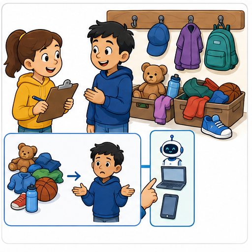
Learner name:
Readiness for the connected explanation
A teacher permits a paper prototype using fictional activity requests. Does this permit collecting real pupils’ names and publishing their choices? Explain.
This week’s end goal
By the end, I can turn a recorded problem into a bounded, measurable project goal.
Student lesson · 2 of 14
Notice the evidence
PICTURE STORY
Look Closely Before You Explain
Pictures give clues; evidence tells us what the clues mean.
What do you notice?
Name three visible details without explaining them yet.
Circle the detail most connected to the system's decision.
Name one detail that may be decoration or distraction.
Make a first prediction and state the clue that supports it.
My observations, prediction, and evidence:
A closer explanation
For the final project sequence, we will develop a small activity recommender on paper. Its users are fictional pupils choosing a classroom activity that fits their available time and room conditions. We will decide what the recommender must do, build a traceable process, test it and explain its limits. A recommendation is a suggestion; the pupil can decline it.
Start before the solution. Our supplied observation log describes ten fictional requests made using an activity catalogue. Six first choices fit the request’s time and room conditions. Four did not and needed another choice. These invented classroom records give us a problem to investigate. They are not observations of your classmates and do not show how often this happens in other classes.
A useful problem statement is: “In the supplied ten-request exercise, four first choices did not fit the stated time or room conditions, so those users had to choose again.” “We need AI” names a possible technology but says neither who needs help nor what should improve. The log also does not establish whether unclear wording, missing information or another cause produced the mismatches.
Student lesson · 3 of 14
See how it works
VISUAL MECHANISM
Input → Process → Output
Follow the information instead of imagining magic inside the machine.
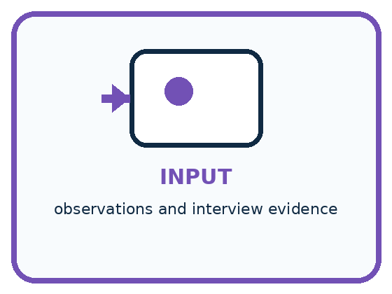
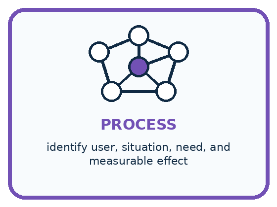
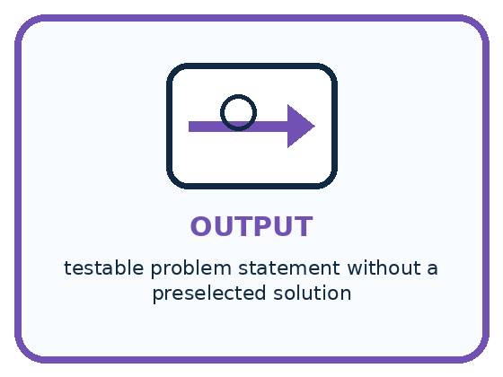
INPUT observations and interview evidence
PROCESS identify user, situation, need, and measurable effect
OUTPUT testable problem statement without a preselected solution
Draw a fresh example with all three stages:
A closer explanation
From an observed difficulty to a testable goal
Our target outcome is a compatible suggestion when the catalogue contains one, and a clear no-match message when none fits. Compatibility means respecting the stated conditions; it does not mean that every pupil will enjoy the activity. We can check time and room conditions from a request and catalogue. Enjoyment would need different evidence.
Count compatible suggestions, incompatible suggestions and no-match messages separately. Otherwise a system could avoid every wrong suggestion by refusing to suggest anything. If a valid option existed, that refusal would still fail to provide the intended help. Record the total number of requests so a count has a clear denominator.
Connect the picture and the explanation
Point to the input, the deciding step and the result in this week’s visual. Explain the same step in ordinary words. A picture helps when you can say what each part represents.
Student lesson · 4 of 14
Compare the cases
PICTURE GALLERY
Four Cases, Four Clues
Use the visual cue, then read the evidence carefully.
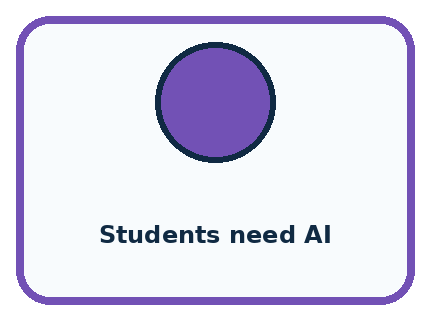
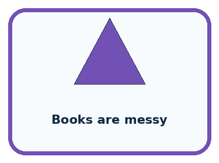
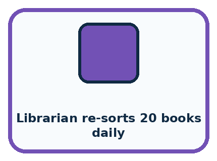
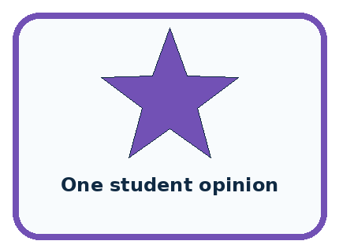
CASE 1 — Students need AI Clue: technology-first claim. Meaning: weak framing.
CASE 2 — Books are messy Clue: vague judgment. Meaning: needs observation.
CASE 3 — Librarian re-sorts 20 books daily Clue: specific burden. Meaning: testable need.
CASE 4 — One student opinion Clue: useful but limited. Meaning: seek more evidence.
Which two pictures are easiest to confuse? What evidence separates them?
Change one thing in the pictured case
Change: The approved list contains no tray with every requested tool.
Prediction: The finder should report no suitable tray rather than guess.
Reason: Success includes honestly identifying unsatisfied requirements.
Student lesson · 5 of 14
Words that unlock the idea
VOCABULARY
Words You Can See and Use
The badge is a memory cue; the definition does the real thinking work.
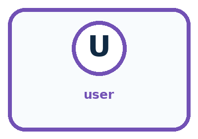
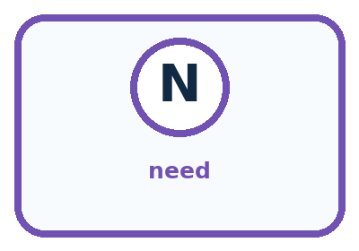
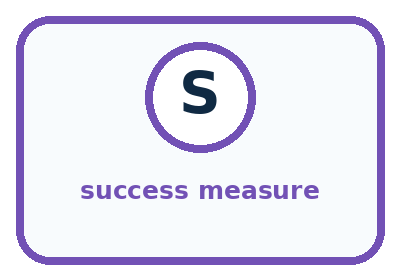
| Word | Meaning | My example |
|---|---|---|
| user | person affected by the problem or solution | |
| need | observable difficulty or goal | |
| interview | structured questions used to learn from a person | |
| success measure | evidence showing whether the need improved |
Misconception detective
CLAIM TO REPAIR A popular technology is proof of a real problem.
Use one vocabulary word and one piece of evidence to repair it:
Words used in the closer explanation
| Word | Meaning |
|---|---|
| User need | Something a person needs to accomplish in a particular situation |
| Problem statement | A specific description of who faces a difficulty and what that difficulty is |
| Outcome | The result experienced by the user |
| Constraint | A condition that a proposed solution must respect |
Student lesson · 6 of 14
Follow a worked example
WORKED EXAMPLE
Watch the Reasoning, Not Just the Answer
Every step connects a claim to observable evidence.
STEP 1 — OBSERVE observations and interview evidence
STEP 2 — TRACE identify user, situation, need, and measurable effect
STEP 3 — CONCLUDE testable problem statement without a preselected solution
What new evidence could change this answer?
A closer explanation
| Project choice | Boundary for this sequence | Reason |
|---|---|---|
| Users and setting | Fictional classroom activity requests | A clear situation to test |
| Information | Available minutes and quiet-room requirement | Relevant to compatibility |
| Action | Suggest an activity or report no match | The user retains the choice |
| Outside the project | Names, profiles, purchases and public posting | Not needed for this paper task |
The teacher permits a paper prototype using fictional requests and an approved catalogue. We do not need names, home details or a history of a pupil’s choices. A request can say “10 minutes, quiet room required” without identifying anyone. Use only the request information needed to test the intended outcome.
A clear catalogue or a short checklist may solve this problem. We will compare a proposed recommender with a simple starting method instead of assuming a more complicated system is better. This project can use explicit rules; it does not have to fit a machine-learning model. The choice should follow the problem, available evidence and limits of the task.
Learn from the worked case
Cover the result before checking it. Say what is given, choose the procedure, and follow one step at a time. Then uncover the result and explain your first mismatch. Ask why a step is allowed, not only what number it produces.
A pictorial worked case: Find a Real Problem
A fictional class loses time finding the correct craft tray.
The facts we will use
In eight recorded requests, three selected trays lack a required tool; five match.
The teacher permits a paper finder using fictional requests and an approved tray list, with no pupil names.
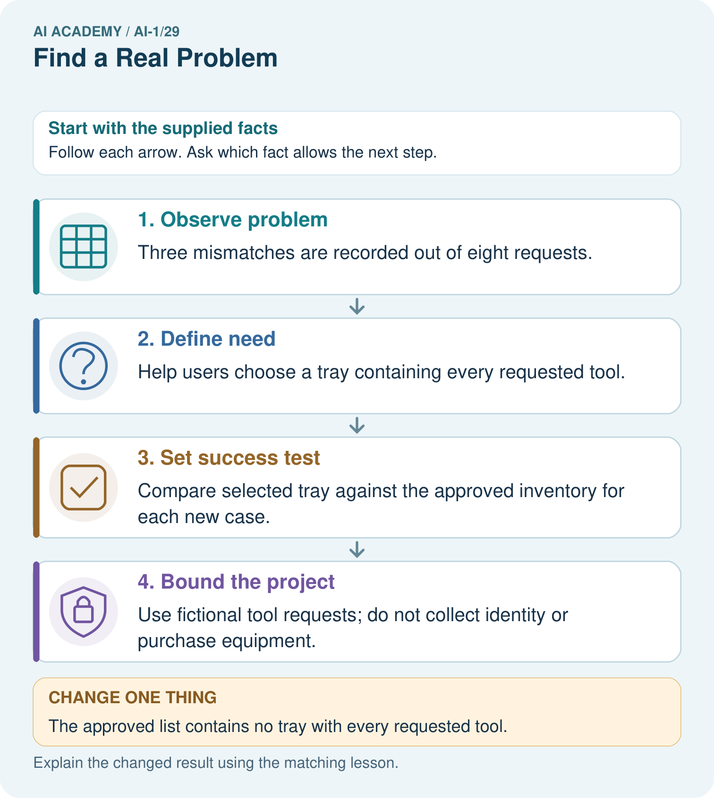
Read the picture one step at a time
Why this result follows
The mismatch record describes a concrete need. A measurable goal checks whether the chosen tray satisfies the request; calling the system smart would not tell us how to evaluate it. Start with a transparent paper baseline, and keep unsatisfied requests visible instead of selecting a near match without warning.
What this example does not establish
Eight requests do not show the problem’s frequency across the entire school or prove AI is necessary.
Student lesson · 7 of 14
Find and repair a mistake
COMPARE
Same Result, Different Reason
A comparison helps reveal the true concept boundary.
| Case | Evidence | What it shows |
|---|---|---|
| Students need AI | technology-first claim | weak framing |
| Books are messy | vague judgment | needs observation |
| Librarian re-sorts 20 books daily | specific burden | testable need |
| One student opinion | useful but limited | seek more evidence |
Repair two tempting claims
CLAIM A A popular technology is proof of a real problem.
Repair:
CLAIM B The first interview represents every user.
Repair:
A closer explanation
Before building, say what would count against your idea. If a clear catalogue already produces compatible choices for all supplied cases, adding a recommender might offer little benefit on those cases. If the recommender hides valid options or produces unexplained no-match messages, revise it or keep the simpler method. A project can succeed as an investigation even when the evidence favours a simpler solution.
Keep the ten-request observation log separate from later evaluation records. It motivates the problem; it is not a fair test result for a tool that has not been built. Later weeks will introduce explicit requirements and test cases, including a reserved final set. Label plans as plans and measured results as results.
Student lesson · 8 of 14
Practise together
GUIDED PRACTICE
Try It, Check It, Explain It
Use support now so you can succeed independently later.
Explain how the picture story demonstrates this idea: A strong project begins with a specific user and observable need.
Use a fresh example to explain user.
Trace a new input → process → output example.
Find and repair the error in: The first interview represents every user.
Invent one edge case and name the safe response.
A closer explanation
Suppose a team writes “All pupils hate the catalogue because it is too long.” The supplied log says nothing about every pupil’s feelings or the cause of the mismatches. A more careful note is “Four of ten first choices were incompatible; the cause is not yet known.” A hypothesis such as “the time information may be hard to find” is something to investigate, not an established finding.
If we later investigate the cause, we could inspect where compatibility information appears in the catalogue or have a teacher organise a permitted comparison of clearer formats. Do not quietly collect real pupils’ data just because it might help. For this sequence, the supplied fictional records are enough to build and test a paper process.
Practise with less help: Identify claims beyond the evidence
Use workbook W2 for the connected example “A problem worth solving”. First fill the input and rule boxes. Try the middle steps before asking for a hint. After a hint, try the next step yourself.
| Plan | Do | Check |
|---|---|---|
| What is given? Which rule or procedure applies? | Record each intermediate step. | Does the result follow? What remains unknown? |
Explain your trace to a partner. Your partner points to one step to check. Swap roles on the next case. Each person writes their own explanation.
Check your reasoning
Use the worked case for A problem worth solving. Proposed explanation: “Using AI is itself the outcome”. Decide whether this explanation is supported. Point to the step or supplied fact that decides; explain your repair if needed.
Answer on your own before discussion. If you are unsure, say which step you need help with.
Explain the picture
Write a one-sentence project goal and say what evidence would count as a failure.
This is supported practice. Keep the separately named independent case for an attempt before feedback.
Student lesson · 9 of 14
Run the investigation
EXPLORER LAB
Need-Finding Interview
Predict first, test honestly, and explain what the evidence means.
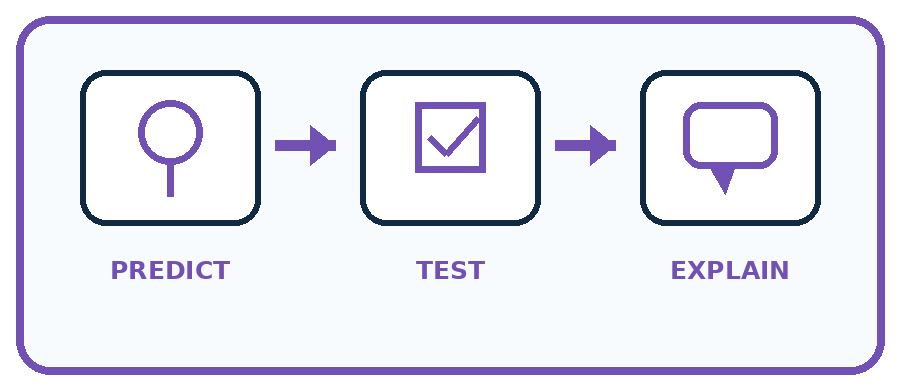
State your prediction before the result is known.
Complete the task: Interview a classmate and write one testable need statement.
Keep a normal case and an edge case clearly separated.
Record what happened—even when it does not match your prediction.
Explain the result, one limitation, and the next useful test.
| Case | Prediction | Observed result | What it means |
|---|---|---|---|
| Normal | |||
| Edge |
Plan → try → check
Before trying: what do I expect, and why? While trying: which step could first go wrong? Afterwards: what did I actually observe, and what should change? Keep “not run” if you only traced the procedure.
Student lesson · 10 of 14
Build your understanding
PRACTICE LADDER
Climb from Recall to Defense
Each step asks for a stronger kind of understanding.
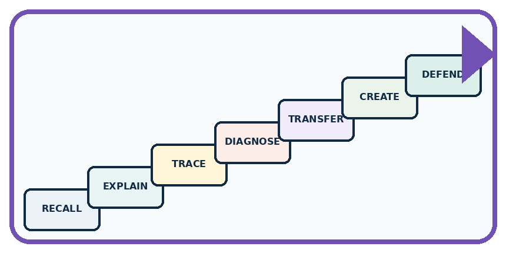
RECALL Define user.
EXPLAIN A strong project begins with a specific user and observable need.
TRACE Show the input, process, and output.
DIAGNOSE Repair: A popular technology is proof of a real problem.
TRANSFER Apply the idea to a new home or classroom case.
CREATE Design one revealing test.
DEFEND Give a claim, evidence, mechanism, limit, and safe action.
Student lesson · 11 of 14
Connect your project
PROJECT
Helpful Classroom Sorter
Build one coherent system across the year, one evidence-based decision at a time.
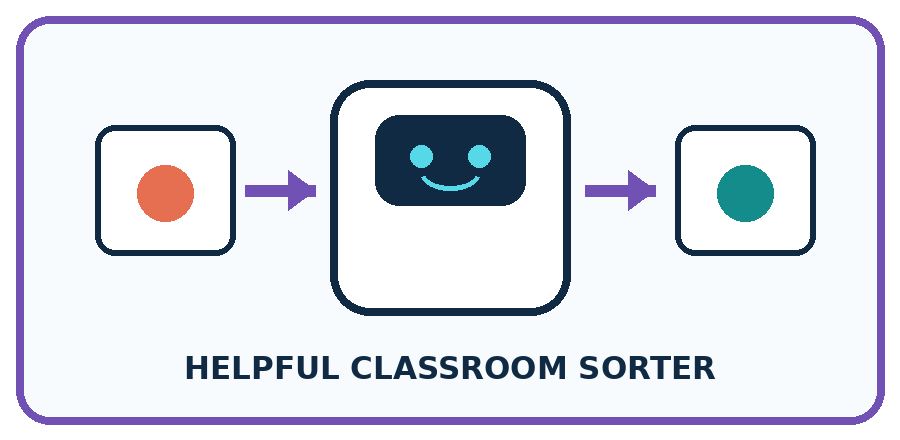
What real classroom need does this serve?
What information is necessary—and what should stay private?
What happens inside the process?
What normal and edge cases will you test?
When should it say not sure or ask a person?
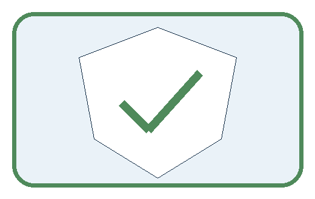
My project decision:
Evidence for your project
For the Helpful Classroom Sorter, retain the problem record, permitted scope, baseline and observable acceptance criteria.
Student lesson · 12 of 14
Show what you know
MASTERY
Fresh-Case Independent Proof
Complete this after teaching and guided practice have ended.
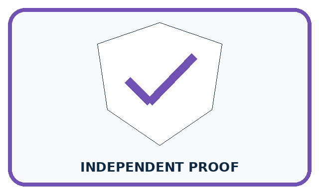
□ Name or draw the fresh case.
□ Trace input, process, and output.
□ State the conclusion and strongest evidence.
□ Name one limit, failure, missing clue, or fairness/privacy concern.
□ Explain one safe next action or improvement.
Independent evidence:
My level: □ Not yet □ With one hint □ Independently □ I can teach it
Student lesson · 13 of 14
Study a complete case
Week 29 Worked case
Use the supplied details to practise the weekly concept before attempting the independent question. This case extends the illustrated lesson.
The situation
Shared markers are often lost because tray labels are unclear.
The question
State the need before selecting AI.
Worked explanation
Students need to return markers correctly and quickly. Test clearer labels before proposing a model.
Explain it in your own words
Which detail supports the answer, and why does it matter?
Trace the supplied case visually
Solve the need before selecting technology
| Evidence or stage | Value or result |
|---|---|
| Problem | Markers returned to wrong trays |
| Possible cause | Unclear tray labels |
| Simple trial | Clearer labels |
| Evidence | Measure correct and quick returns |
Shared markers are often lost because tray labels are unclear.
State the need before selecting AI.
Students need to return markers correctly and quickly. Test clearer labels before proposing a model.
Student lesson · 14 of 14
Try a new case independently
Independent case: Frame a different problem independently
In a fictional equipment cupboard exercise, eight teams choose a box from a list. Three boxes do not contain the items required by the corresponding request; five do. The teacher permits a paper box-finder using fictional item requests and an inventory. Write a brief naming the user difficulty, evidence, desired outcome, necessary information, an excluded action and a simple alternative. Identify one cause or benefit that these counts do not establish.
Attempt this case before feedback. Record any help. Earlier examples below are further practice; a case already practised with feedback cannot establish fresh transfer.
Week 29 Independent application
Close the worked explanation. Apply the idea to this different question without copying.
Learners often cannot find borrowed classroom books. Define the problem before choosing an AI tool. Suggest one simple solution to compare with AI.
My answer, with a trace, calculation or supporting evidence
Create and test
Change one relevant detail. Predict the result before testing. Include a boundary or missing-information case when it helps reveal a limit.
My changed input and expected result
Connect to your project
Choose the Classroom Sorter's real user and measurable need; keep an AI-free solution option open.
The evidence I will keep
Your teacher has the independent answer and scoring criteria. Complete the matching workbook week to keep your practice evidence together.
Transfer practice from the original programme
Students spend three minutes finding returned books. Compare shelf labels with an AI locator. Define one fair success test before choosing a solution.
Use feedback to improve
Attempt the independent case before hints. Record whether you worked alone, used a hint or followed a model. After feedback, fix the first unsupported step and explain why it changed. A later check uses a changed case, not a copied answer.